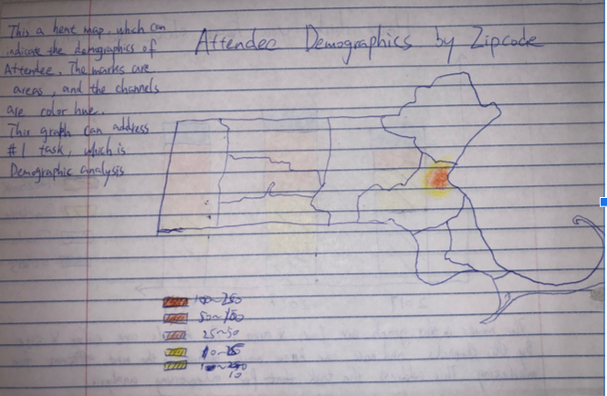
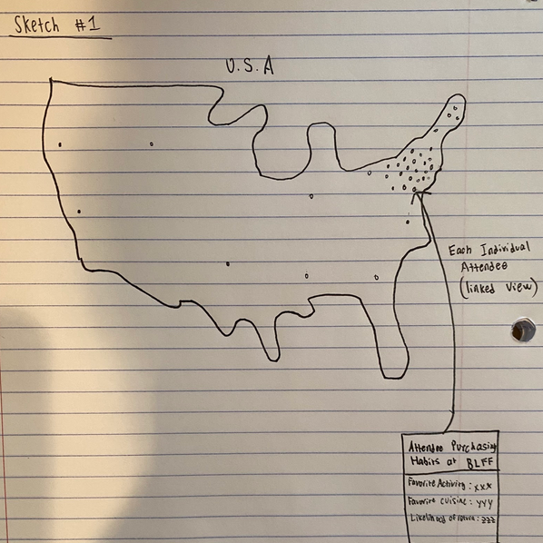
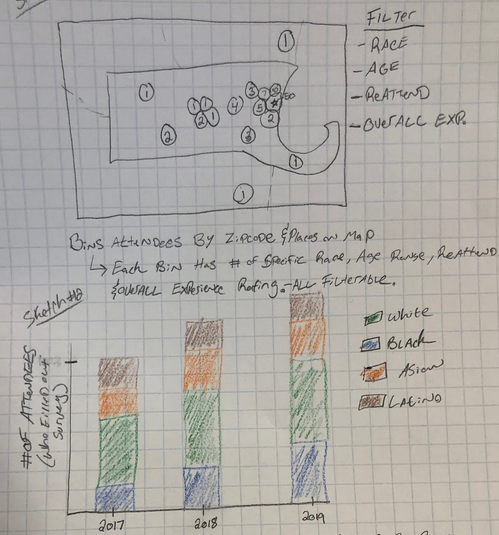
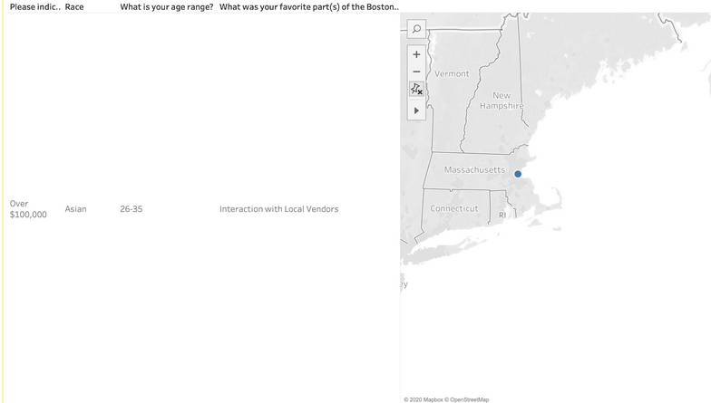

Dan Krasnonosenkikh, Christian Yiu, Jacob Hoffman, Tian Xia
Service-Learning Course Project as part of DS 4200: Information Presentation and Visualization, taught by Prof. Dylan Cashman, Data Visualization @ Khoury, Northeastern University.
The following visualizations were created in collaboration with SBN in order help show off what SBN has been able to accomplish so far to potential sponsors. It is important for SBN to of acquire funding from organizations other than the State of Massachusetts in order for their organization to be more financially flexible. Our hope is that our visualization will be able to further highlight the successes of the food festival, especially for the further advancement of their mission statement.
One of the main things that SBN emphasizes is their diversity in their demographics. It is also a key feature that they are proud of wish to show off. As a result, our main focus will be to navigate the user through the our visualization to highlight their diversity.
Our main focus of this project is to vizualize the different categories of demographic information that was captured from the Boston Food Festival attendee surveys. Our vizualization is primarily location-based and utilizes a map as the main selection criteria for each individual attendee.
We heavily utilized the zip-code data to locate attendees, and to act as bins for multiple attendees from the same area. Additionally, we use the income level (categorical), race (categorical), and favorite experiences (activity/cuisines) from the food festival (qualitative, non-categorical). The data is sourced from surveys handed out during the food festival and was then given to us in an excel file. Some preparation/preprocessing in excel was required to make managing the data go smoothly.
Thee main task that our vizualization hopes to accomplish is a demographic analysis of the attendees at the food festival:
From our original conversations with SBN, we knew we wanted to focus on showing the demographics of attendees. Looking through the data, the best options to show this were the zip-code location, race, age, and income data. Our original sketches, shown below, highlight some of the ideation process where we tried to come up with the best way of showing this and where we considered some other aspects of the data to focus on before settling on the demographic focus.
  
After discussion, our consensus led to a more refined visualization which more closely resembles the final outcome as seen below. We used tableu to get a sense of what our ideas would look like with the data in place, although we had yet to implement our final version which included the bar charts that also have the interactivity with the brushing and linking.

For our final visualization, the zipcode location lent itself well to a map-based visualization. For the other three sets of data, we were originally unsure of how we wanted to implement them and after some thought settled on bar charts as they were set into a few categories that lent themselves well to bar chart formats. We then implemented brushing and one-way linking to enable the user to better see the demographics of the attendees coming from different locations.
If we were to continue work on this project, we would further improve usability. We would also consider implementing a visualization to show more about the attendees experience at the festival. A better understanding of the demographics and their preferences would hopefully provide many opportunites to glean new insights.